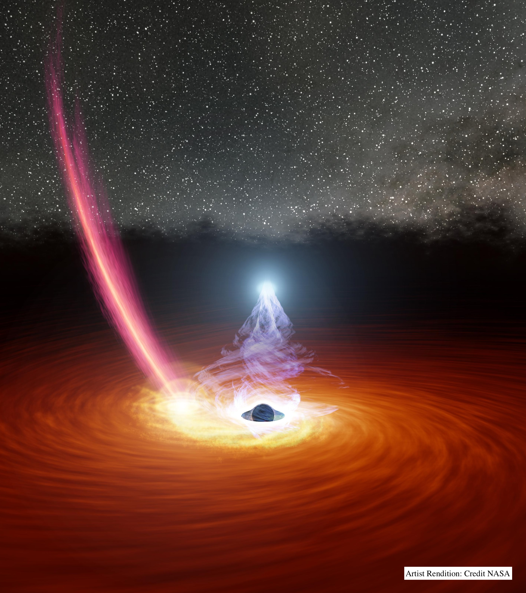
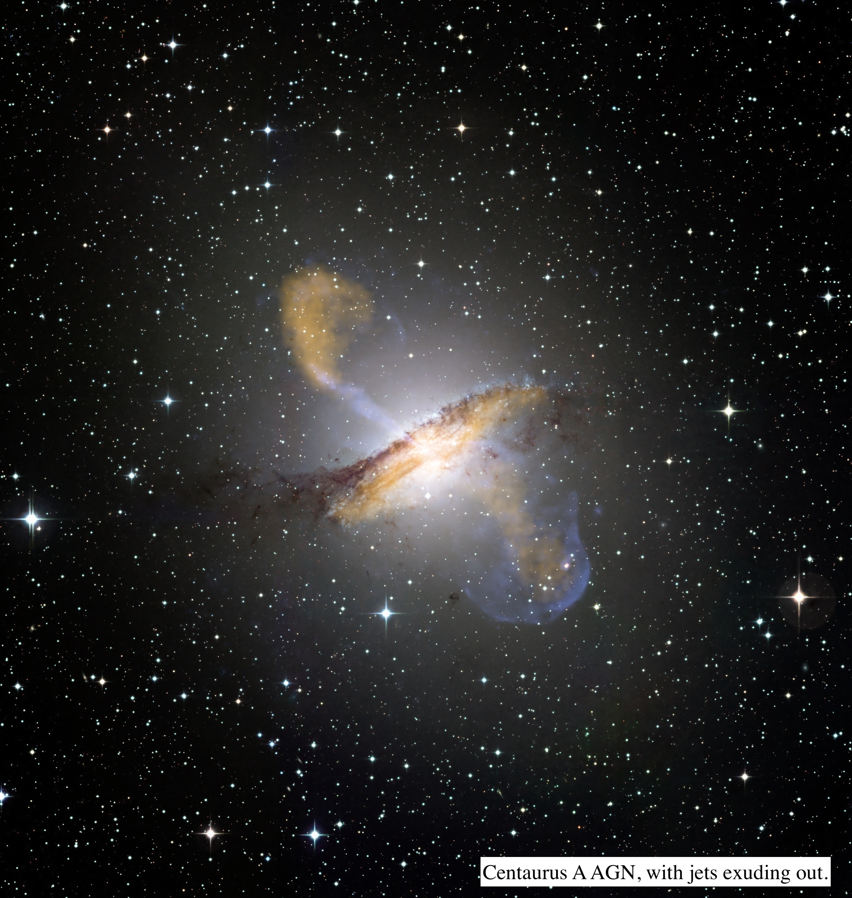
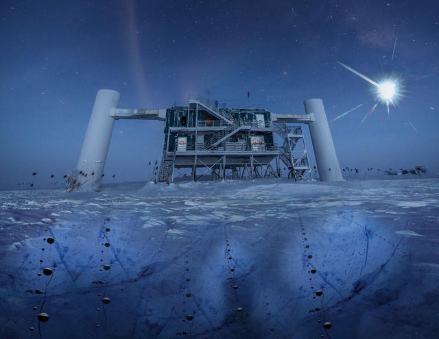
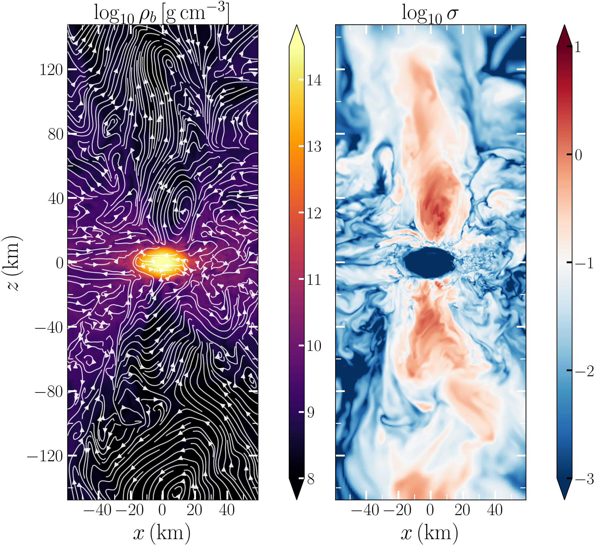
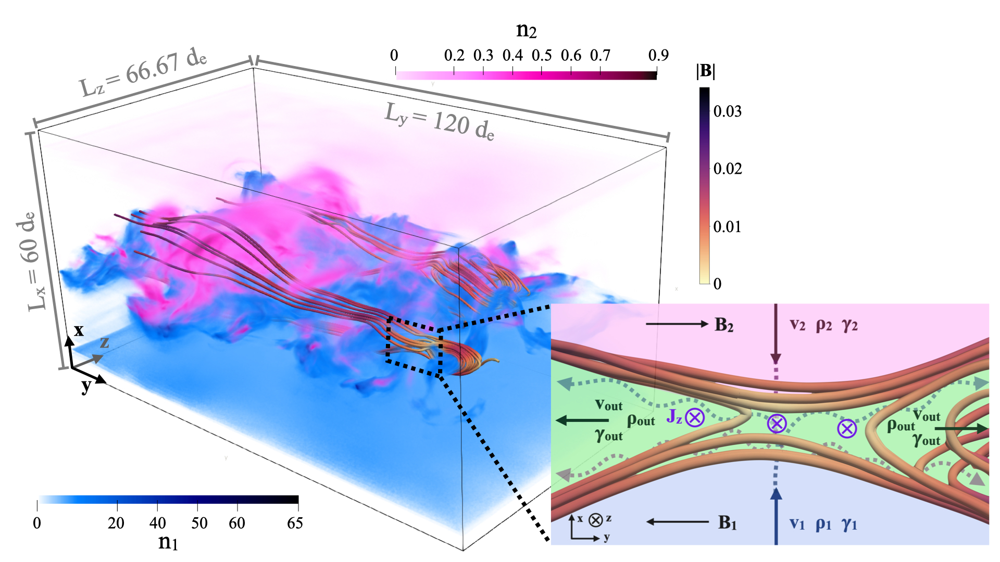
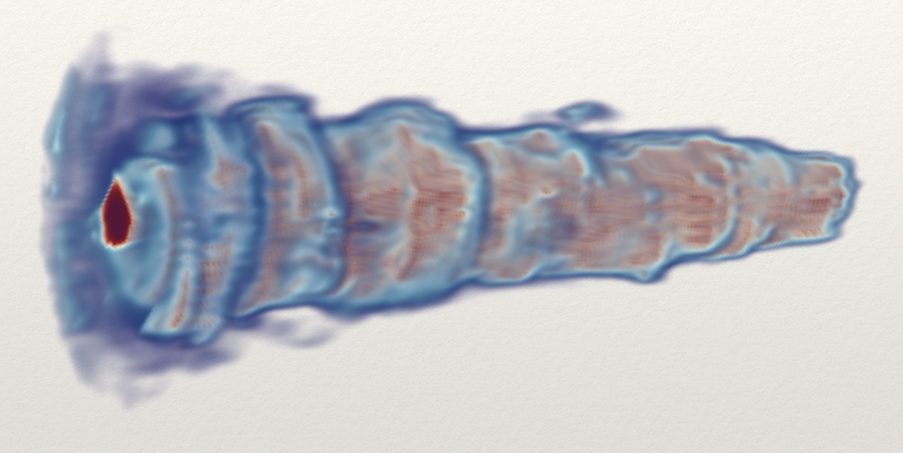
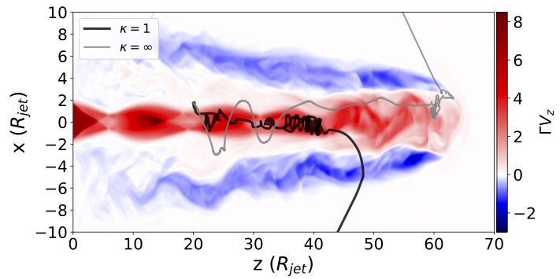

I'm a theoretical astrophysicist studying the high-energy plasma physics of black holes and their
surroundings. I work at the intersection of kinetic plasma physics, particle acceleration and transport,
high-energy radiation, and multimessenger astrophysics, connecting microscopic plasma processes to the
global accretion flows, jets, and winds through which black holes grow and shape their host galaxies.
Much of my current work centers on the coronae, relativistic jets, and magnetized disks of active
galactic nuclei (AGN). These are the regions where the extreme electrodynamics near a supermassive black hole is
channeled into radiation, outflows, and energetic particles. High-energy observables, whether photons,
cosmic rays, or neutrinos, are a powerful window into black-hole accretion, jet formation, inner-disk
structure, and wind launching. To study these phenomena I combine analytic theory with first-principles
kinetic (particle-in-cell) and magnetohydrodynamic simulations, and I increasingly apply the same tools to
neutron-star mergers and other multimessenger transients.
I received my PhD from the University of Chicago, advised by Damiano Caprioli and Scott Wakely,
and was then a Neil Gehrels Prize Fellow at the Joint Space Science Institute (University of Maryland &
NASA Goddard). I am currently a Lyman Spitzer Jr. Fellow at Princeton University.
Research

Black-Hole Coronae: Formation, Composition, and Radiation
Coronae are the main X-ray emitters in AGN. They are compact, highly magnetized plasma near the event
horizon, where hot electrons inverse-Compton scatter disk photons into X-rays and accelerated ions can
produce high-energy neutrinos. Their geometry, particle content, and heating are usually prescribed. My
goal is to predict them from the magnetic structure and plasma physics of the inner flow. My kinetic study of NGC 1068 connected coronal proton acceleration to
its X-ray and neutrino emission
(Mbarek et al. 2024), and
a recent model proposes that magnetic flux carried inward by circumnuclear winds accumulates into the
compact region that emerges as the X-ray corona
(Mbarek 2026a).

Relativistic Jets: Acceleration, Emission, and Structure
Relativistic jets carry energy from the central engine out to galactic scales and are leading
candidate sources of ultra-high-energy cosmic rays and neutrinos. I build frameworks to follow particle
injection, acceleration, and escape in three-dimensional MHD jet simulations and connect the resulting particle populations to jet emission and multimessenger signals.
A current focus is the changing-look AGN 1ES 1927+654, whose newly emerging jet
(Meyer et al. 2025;
Laha et al. 2025) offers a rare chance to
study a corona–jet transition.

High-Energy Neutrinos
Neutrinos are weakly interacting messengers, produced in proton–proton and proton–photon
interactions, that let us probe regions photons cannot escape. I predict neutrino emission from both AGN
coronae and jets: from the corona of NGC 1068
(Mbarek et al. 2024) and
from accelerated ions in AGN jets (Mbarek et al. 2023), and I
connect kinetically-informed coronal acceleration to the diffuse extragalactic neutrino background from
supermassive black holes (Mbarek 2026b
). Image Credit: IceCube/NSF.

Neutron-Star Mergers and Multimessenger Transients
The plasma physics of accretion flows and jets carries over to other strongly magnetized, radiating
systems. In the magnetic towers of neutron-star merger remnants, I showed how accelerated protons
initiate hadronic cascades that load the outflow with electron–positron pairs, redistribute
dissipated magnetic energy, and emit neutrinos
(Mbarek, Wu & Most 2026). This
reshapes the plasma that later powers the highest-energy emission of short gamma-ray bursts. As genuine
multimessenger transients, these systems tie plasma microphysics to the gravitational-wave and
time-domain era.
Particle Acceleration & Transport

Relativistic Asymmetric Reconnection
Magnetic reconnection — the breaking and reconnecting of oppositely directed field lines
— need not occur between two identical plasmas, as has usually been assumed in the relativistic
regime. We established scaling relations for relativistic asymmetric reconnection and tested them against
PIC simulations
(Mbarek et al. 2022).
The image is a zoomed-in 3D PIC simulation of an asymmetric reconnecting layer (credit: Sophia Woznichak).
Asymmetric reconnection is prominent in the heliosphere and should be studied in the relativistic regime.

Stochastic Acceleration in Magnetized Turbulence
In magnetically dominated turbulence, I derived and tested a scaling law linking macroscopic plasma
properties to the nonthermal particle spectra produced by stochastic acceleration, including the effect
of particle escape
(Mbarek et al. 2026).
This connects the conditions resolved by global simulations to the particle spectra they cannot resolve.

One-Shot Acceleration
I developed a framework, agnostic to the acceleration mechanism, that integrates particle
trajectories through relativistic 3D magnetohydrodynamic (MHD) simulations. It showed that ions can reach
ultra-high energies via espresso,
tapping the motional electric field of the ultrarelativistic jet spine for a boost of order the square of
the flow Lorentz factor
(Mbarek & Caprioli 2019,
ApJ 886, 8).

Stochastic and Shear Reacceleration in Jets
Unresolved small-scale scattering can unlock stochastic
reacceleration in relativistic jets
(Mbarek & Caprioli 2021
), and shear acceleration in the Centaurus A jet can imprint itself on the
ultra-high-energy neutrino spectrum
(Mbarek et al. 2025).
These calculations build on a bottom-up framework linking espresso-reaccelerated ions
in AGN jets to their ultra-high-energy cosmic-ray and neutrino output
(Mbarek et al. 2023).
The figure shows a particle propagating through a 3D MHD simulation of a jet.
Outreach
Astronomy Podcast
With Lina Necib (MIT), I co-founded Ga3da Falakia, the first astronomy podcast in the
Tunisian dialect. It now has more than 3,500 subscribers, along with live sessions on science and
research opportunities, and we hope to keep expanding. Stay tuned!
Other Activities
I enjoy making seemingly complex science more accessible to a wide audience. If you're interested in outreach projects in the US, Tunisia, or
France, let me know. We can discuss current projects or start a new one.
Get In Touch
If you have any questions or would like to get involved in the science or in outreach opportunities,
please do not hesitate to reach out.